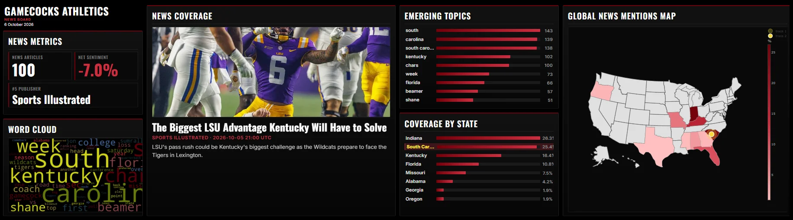
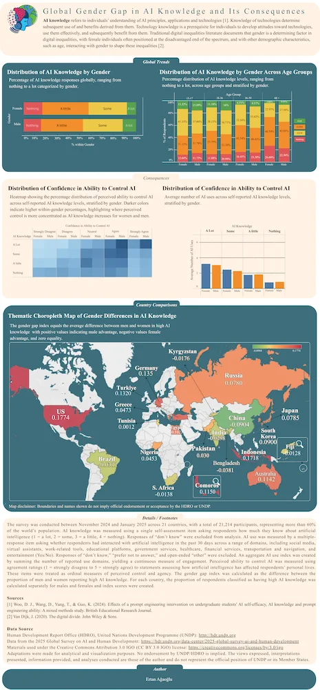
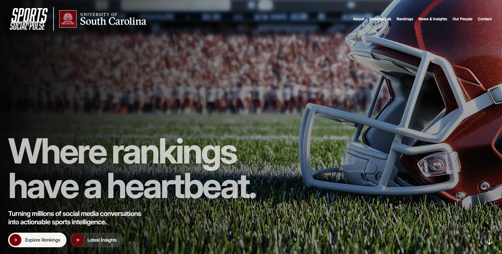
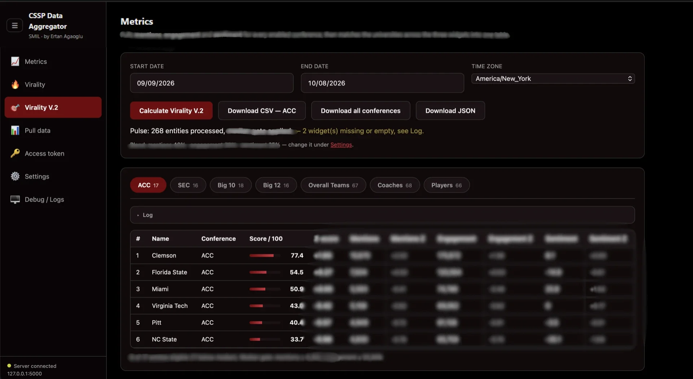

Apps, dashboards, and visualizations that turn data into clear stories, along with my work in AI, from podcasts to chatbots.

A real-time news analytics dashboard that tracks media coverage of any topic. Keywords are set in an admin panel, and the app pulls matching articles from NewsAPI and FreeNews APIs, deduplicates records, and displays sentiment analysis, emerging topics, word clouds, and geographic coverage metrics. Everything is customizable through the admin panel.
Features include dynamic headline rotation, VADER sentiment scoring, and a toggle between country-level and US state-level coverage views powered by Plotly choropleth maps. Built for the USC Social Media Insights Lab with a digital-signage layout optimized for 3072×864 displays and full responsive support.
Python · Data aggregation · Real-time API integration · Multi-page Streamlit apps · Configurable analytics dashboards
View demo →At the Social Media Insights Lab, I conduct social media and audience analyses for external clients, from pharmaceutical companies to media agencies, as well as for internal projects at the University of South Carolina. I translate complex data into clear reports for clients and stakeholders. I also streamline the lab’s work through programmatic solutions, building scripts and applications the team uses to scrape and analyze social media data.
As a member of the College Sports Social Pulse™ team, I have played a key role in developing and refining the statistical methodology behind the Pulse. I also built the computational system that turns the underlying data into the weekly Sports Social Pulse™ rankings, creating a consistent and repeatable process for analyzing large volumes of data.
Sprinklr · Quid · Brandwatch · ViralMoment · Python
For my dissertation, I built a health chatbot to test how explanation quality and emotional language shape users’ perceptions of AI health advice. It runs as a custom web app with OpenAI integration. Each reply is paired with a separate AI-generated explanation, and a researcher dashboard logs every conversation and links it to participants’ survey responses.
Every conversation follows a scripted flow rather than free chat. For each exchange, the model is instructed on what the reply must do, or the exact wording is fixed, so the content stays identical across experimental conditions. A settings page lets me adjust the model, prompts, tone, explanation style, and conversation length without touching code.
Explainable AI · Conversational design · LLM integration · Prompt design · Experimental research
In the course I teach, International Mass Communication (JOUR 312), students choose a country to research in detail, focusing on its laws, media culture, and regional or global influence. Before they start writing their papers, they interact with a chatbot specifically prompted to provide them with structured information about the country, along with possible theories they can integrate into their papers.
For an experiment with my advisor, Dr. Linwan Wu, I built a chatbot to test how design features shape users' perceptions and wellbeing. It runs on uChat and Chatwoot with OpenAI integration and gives users structured, supportive answers in real time.
Chatbot screenshots will be added once the paper is published.
Conversational design · OpenAI API integration · Prompt design · Experimental research
AI podcasts.
As coordinator of the USC Biometrics and User Experience Lab, I train faculty and students to use biometric tools in their research and coursework.
These eye-tracking heatmaps show where viewers looked on three campaign pieces that students created for JOUR 517 Integrated Campaigns, taught by Professor Marcia Purday: a billboard, a poster, and a LinkedIn ad. Red marks the areas that held attention the longest. I help students test their materials, including through A/B testing, so they can see what draws attention and refine their designs.
iMotions · Eye Tracking · A/B testing · Training

It shows gender differences in AI knowledge and how age interacts with gender to shape digital inequality. It draws on the 2025 Global Survey on AI and Human Development from the UNDP Human Development Reports, covering 21 countries. Because AI knowledge is measured on an ordinal scale, averages would be misleading and tables quickly become cluttered, so I designed the visuals to make the patterns clear to general audiences. This visualization won first place in the University of South Carolina, University Libraries 2026 Data Visualization Awards.
Design choices
Tableau · Canva · RStudio
View full visualization → Read the news →


College Sports Social Pulse™
Sports Social Pulse™ is a University of South Carolina College of Information and Communications initiative that turns millions of social media conversations into actionable intelligence for media organizations, athletic departments, conferences, sponsors, and brands. I developed the software behind it for the USC Social Media Insights Lab, an app that ranks college sports teams, players, and coaches by virality.
The app pulls mentions, engagement, and sentiment from a social listening platform and combines them into a single virality score from 0 to 100. Schools are ranked within their own conference, while players and coaches are ranked across the league. The lab can adjust what gets tracked and how it is scored, and export results for further analysis.
By turning raw social data into clean, comparable rankings, the app gives the program's data science, sports business intelligence, and strategic storytelling a reliable foundation for uncovering the stories, trends, and fan behaviors driving the conversation around college sports.
Python · Data aggregation · OAuth 2.0 API integration · Entity resolution · Configurable analytics dashboards
See the reports here →